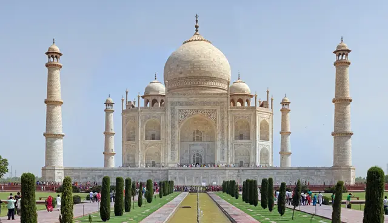

- The Taj Mahal is a beautiful white marbel monument located in the city of Agra on the banks of the river Yamuna.
- It is one of the finest examples of architecture that combines elements of Mughal,Persian,Ottoman Turkidh and Indians architecture style.
- Located in the state of Uttar Pradesh, it is one of the Seven Wonders of the World and a jewel of Muslim art in India.
- It was build by the Mughil Emperor Shah Jahans in memory of his wife, Mumtaz.
------Arnav R. Ingalkar